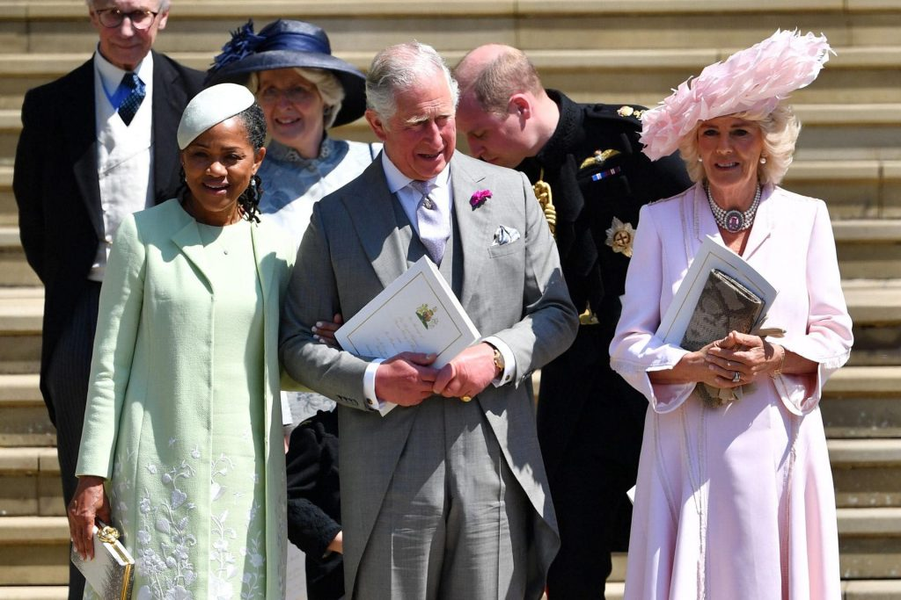

As far as I can tell, the position of the Australian Republic Movement ever since the failure of the 1999 Republic Referendum has effectively if tacitly been that there is no point in another referendum while the current Queen remains on the throne. Certainly the ARM’s current “plan” (such as it is) suggests such a strategy. It envisages a possible referendum in 2022 when the Queen will be 96 if she lives that long. More likely Charles will be on the throne. The ARM hypothesis seems to be that the reverence in which the current Queen is held was a significant reason why the Republic Referendum failed in 1999. Presumably the hope/supposition is that Charles will rapidly show himself to be such a buffoon as King that Australians will be much more receptive to voting for a republic than they were in 1999. But does that have any substance? The 1999 Referendum failed within a couple of years of the death of Princess Diana, a time when the Queen was widely reviled by her own subjects including Australians. Things had recovered a bit by 1999, but it isn’t evident that the Queen was especially revered.Similarly, although Charles seems to be a tad eccentric, it’s unlikely that he will emerge in his 70s as the Renegade King and immediately alienate his subjects. More likely he will act under the close guidance of senior Royal Household advisers, just as his mother did in her early years on the throne.
In my view the ongoing seeming stability and complacent acceptance of constitutional monarchy by most Australians (although a recent poll showed increasing support for a republic) has much more to do with a belief that the current Australian system is itself stable and durable. “If it ain’t broke don’t fix it” remains the prevailing view. However that attitude itself flows from a fairly abysmal level of ignorance about our Constitution on the part of most Australians. There are numerous deficiencies in the Constitution, not least its failure to embrace First Nations peoples, the grossly defective disqualification provisions of s 44 and lack of protection of basic rights and freedoms.
However the potential instability flowing from the lack of clarity of the relationship between the royal Head of State, her Australian representative the Governor-General and our elected governments is in my view the most serious problem, even though it has only manifested itself in practice once since Federation.
To comprehend the deficiency fully, an Australian citizen would need to have a good basic understanding of the concepts of representative and responsible government in a Westminster democracy; the respective roles of Queen, Governor-General and Prime Minister; the nature and operation of unwritten constitutional conventions especially those surrounding reserve powers; and the constitutional doctrine of separation of powers. The reality is that almost no-one has a real grasp of those things other than constitutional lawyers.
Fortunately, it is possible to explain at least the basic problem in fairly stark if simplistic terms. The Governor-General possesses unwritten constitutional reserve powers to sack the Prime Minister and elected government (or call an election against the will of the government) in some circumstances defined by unwritten conventions that are themselves a bit vague. One of the associated conventions is that the Governor-General should warn the elected Prime Minister if the G-G is contemplating sacking the PM and his or her government. However, Sir John Kerr sacked the Whitlam government without warning the PM, despite repeated advice from a High Court Justice (Anthony Mason) that he should give such a warning. But on a pragmatic view Kerr would have been a mug to pre-warn Whitlam. As Mason noted much later:
Sir John was very much aware of the possibility that the prime minister might seek to have him removed from office. Apart from his account to me of his conversation with Mr Yeend, he told me of the prime minister’s remark before the state banquet in honour of the prime minister of Malaysia, “It could be a question of whether I get to the Queen first for your recall or you get in first with my dismissal”.
Those few words by Whitlam himself starkly summarise the fundamental flaw at the heart of Australia’s constitutional system. Moreover, the Constitution didn’t exhibit that deficiency at Federation. At that time the Monarch appointed and dismissed the Governor-General on the “advice” (read “at the direction” – one of those pesky unwritten conventions again) of her British Ministers under Constitutionsection 2. In those days the Prime Minister who advised (directed) the Queen to dismiss the Governor-General was NOT the same Prime Minister in respect of whom the Governor-General could have a corresponding and simultaneous constitutional duty of dismissal. It wasn’t until the enactment of the Statute of Westminster 1931 (Imp) embodying the earlier Balfour Declaration of 1926 that the current Duelling Constitutional Six Shooters scenario was created. The first Australian Governor-General to be appointed by the Monarch was Sir Isaac Isaacs who was (rather reluctantly) appointed by George V (the current Queen’s grandfather) in 1931 on the advice of Labor Prime Minister Scullin. The Duelling Six Shooters scenario has never been remedied by constitutional amendment since that time. Consequently, there is no reason whatever to believe that any new constitutional crisis that might arise (whatever the details) would proceed differently from the disastrous and divisive Whitlam Dismissal saga. Again fortuitously, there is a clue pointing towards a possible pragmatic solution, one which would not involve the need for a referendum which would almost certainly fail in Australia’s current political culture, provided by the events leading up to the Whitlam Dismissal itself. As historian Jenny Hocking has fairly recently uncovered, it seems that Kerr had actually reached an informal understanding with the Palace that would in fact have allowed him to pre-warn Whitlam that he faced dismissal without simultaneously courting his own demise:
Kerr’s 1980 journal details how he communicated with the Queen’s private secretary, Martin Charteris, directly about the safety of his own job in the lead up to the dismissal.
Kerr referred in his journal to communications with Charteris about his fears Whitlam could recall him if he found out he was secretly considering the dismissal.
The records also suggest Kerr confided in Prince Charles just a month before the crisis began that he was considering dismissing Whitlam.
Again Kerr expressed concern for the chance Whitlam may have him recalled.
Charteris told Kerr the palace would act to delay matters if “the contingency to which you refer” occurred.
The best guess as to why Kerr failed to warn Whitlam, despite that reassurance from the Palace and Mason’s advice, is that he was simultaneously being told both by the UK government and Charteris that the best outcome would be if the Queen could be kept completely out of Australian partisan politics: – it was an Australian problem for Australians to resolve as far the British were concerned. The facts suggest that protecting the Queen from controversy was Kerr’s overwhelming motivation to opt for ambushing Whitlam rather than giving him a fair go and warning him. All this is laid out by eminent constitutional scholar Anne Twomey, who pithily refers to The Dismissal as “a conspiracy of masterful inactivity”.
An ad hoc “republican” solution
I see no sensible reason why Australia’s Parliament and political leaders should not be able, at least at a time when no potential constitutional crisis is obvious or imminent, to agree on a joint approach to the Monarch as Head of State setting out their joint advice/request as to how a future Whitlam Dismissal situation ought usually be handled by the Palace. That advice would be that if a future Prime Minister advises the Head of State to dismiss the Governor-General in a situation where the latter has warned the PM that he or she faces dismissal, then the Head of State should, before accepting and implementing the PM's advice, require formal written advice from at least two recently retired Chief Justices of Australia, analysing:
(1) whether the formal constitutional prerequisites for dismissal of the PM by the G-G are present;
(2) whether such a dismissal is consistent with evolved constitutional conventions in all the circumstances; and
(3) whether the warning to the PM has been appropriate in its nature and timing.
Depending on that advice, it might be appropriate for the Head of State to “delay matters”, as Sir Martin Charteris put it in 1975, until the deadline for the Governor-General’s warning to the Prime Minister has expired. That suggested procedure would be entirely consistent with the Head of State’s basic role towards an elected government which, as Sir Walter Bagehot put it, is “the right to be consulted, the right to encourage, the right to warn”. Moreover, a joint approach to the Monarch by leaders of all the main political parties to establish this mutually agreed approach in a constitutional crisis, would avoid the possibility of the Monarch being dragged into an Australian partisan political controversy, which appeared to be both the Queen and UK government’s principal concern in 1975. Instead the Monarch would rightly be seen by Australians as fulfilling the proper role of an impeccably impartial arbiter acting strictly in accordance with the principles Australians wanted as well as the constitutional advice of the most eminent Australian lawyers. Incidentally, I also see no reason why an analogous process could not be enshrined in relation to the appointment of the Governor-General. It seems to me that Parliament could, at least under the nationhood power, legislate to require the Government to:
(1) call for nominations for Governor-General;
(2) put nominees up for endorsement/approval by both Houses of Parliament;
(3) conduct a plebiscite to ascertain the wishes of Australian in relation to any one or more nominees pre-approved by at least 75% of Members of Parliament; and
(4) advise the Monarch to appoint the successful candidate as Governor-General.
I must confess I haven’t previously seen a suggestion along these lines, which makes me wonder whether I might be overlooking some basic constitutional or other principle that would make it impossible. But I can’t immediately think of one, so I might as well run the idea up the constitutional flagpole and see if anyone salutes. It seems to me that, together with the proposal outlined above to resolve a Dismissal Crisis, this would actually create an Australian constitutional system that would in truth have a plausible resemblance to the notion of a Crowned Republic that David Flint and others deployed falsely to confuse and mislead the Australian public into voting against a Republic back in 1999. And it would so so without any need for a referendum. Nevertheless any referendum to constitutionalise that system and make Australia a formal Republic would stand a much greater greater chance of success after the Australian people have experienced it in action for a few years. There would simply need to be variations to substitute Parliament and the people as appointors of the Head of State who would then be called President rather than Governor-General, while dismissal of the President would be directly by the two retired Chief Justices, without the formal intercession of the Queen, on the advice of the PM.
Sorry, Ken, but no. The way to amend the constitution is to amend the constitution. Nothing else works in a democracy. Nothing else should work in a democracy. Nothing else should be attempted in a democracy.
When Charles becomes king he will inherit his mother's charisma. ARM fantasies to the contrary are as persuasive ass their belief that somehow, sometime the electorate will change their mind about who should let the president.
Many elite English worried that a playboy like Edward VII could never command the respect his mother had. Within weeks he was drawing crowds as big as Victoria's. Edward VIII had looks, charisma, presence and rhetorical skills. His brother had none of those things and a crippling speech impediment.
Edward may actually have believed his brother would be so ineffectual as king that he would be recalled to the throne after a short time. Within weeks George was drawing crowds big as Edward had while Edward's popularity sank like a stone.
Thanks Alan. The key point I didn't make in the post (it was already too long) is that implementing my proposal would not only provide a testbed for a system involving a popularly elected G-G/President which could later be tweaked if necessary from lessons learned from practice. But experience of its almost certainly trouble-free operation would make it difficult if not impossible for dishonest monarchists to run a grossly misleading scare campaign. The system could be easily constitutionalised by deleting the requirement for royal appointment of G-G/President and having the former CJs rule on dismissal of a G-G President rather than just advising the Queen about it.
The other point worth making is that the democratic principle you mention doesn't really exist in any meaningful sense. The UK system on which ours is based consists of numerous statutes and is altered by ordinary legislation (not direct popular vote/referendum). The constitutions of all Australian states are likewise altered by ordinary legislation not referendum.
And, as my article explained, the very situation that gave rise to the Whitlam dismissal situation arose because Australia's constitutional system was indirectly changed by the effect of a combination of UK and Australian ordinary legislation i.e. Statute of Westminster and Australia Acts. In contrast to the express provisions of the Australian Constitution, Australians NEVER voted for a system whereby the G-G sacks the PM but the PM can sack the G-G first! I can't think of any obvious democratic principle that would require we must all vote to abolish a manifestly unworkable, irrational mechanism to which none of us ever consented in the first place.
The Australian constitution is not based exclusively on the UK constitution. It contains quite strong elements of the US constitution - the senate, the high court, the principle of judicial review, the principle of a written constitution.
Moreover, the reality is that much of the British constitution is effectively entrenched by referendum. Art minimum the entrenched topics are devolution, EU membership and withdrawal, and the electoral system. All have been the seybject for referendums since 1999.
Unhappily for your argument we do have an example of a democratic constitution that could be amended by elite bargain. It is no accident that no democratic constitution written since 1945 has emulated Section 76 of the Weimar constitution.
In Australia at least, federal laws cannot be effectively entrenched, because Parliament is sovereign. As A.V. Dicey wrote, Parliament ‘has … the right to make or unmake any law whatever….’ One aspect of this sovereignty is that parliament cannot bind itself: ‘That Parliaments have more than once intended and endeavoured to pass Acts which should tie the hands of their successors is certain, but the endeavour has always ended in failure.’
That is because Parliament can certainly enact an entrenching provision requiring a referendum to change the protected provisions, but Parliament can always pass an amending Act deleting the entrenching provision and then proceed to remove the protected provision by ordinary legislation without referendum.
In the Australian states, effective entrenchment IS possible, but only because of the so-called "manner and form" provision of section 6 of the Australia Act 1986 which reads:
Thus state parliaments can effectively entrench some legislative provisions by an express drafting mechanism know as double entrenchment. To be effective the law must not only provide that the provision it wishes to protect can only be changed by (eg) referendum but that likewise any change to the entrenching (referendum requirement) provision can also only be changed by referendum.
No such "manner and form" requirement applies to Commonwealth legislation and thus it has been held by the High Court than Federal Parliament cannot effectively bind its successors. The conventional UK view is that this is also the case with laws made by the British Parliament but to the best of my knowledge the UK courts have not ruled on the point to date. Attempts to entrench have only been made in the UK over the last 10-15 years to the best of my knowledge and have not been tested in the courts (because no Parliament has yet attempted to repeal one without following the mandated entrenching procedure. There is clearly a view in Britain that such provisions may be effective despite the traditional accepted Diceyan view of parliamentary sovereignty, otherwise these attempts would not be getting legislated. See for example this article.
The bottom line is that you raise a very interesting question but it in no sense demonstrates an established democratic principle requiring referenda to validate constitutional change in Britain. If anything what it demonstrates is that this is a new principle in Britain.
A couple of additional points.
The US Constitution can be amended either by a 2/3 vote of both Reps and Senate or a convention of states called for by 2/3 of state legislatures. There is no provision for constitutional amendment by popular vote/referendum.
In any event, my proposal does not involve amending Australia's Constitution, either by elite agreement or any other means. It simply involves explicitly recognising what actually happened (entirely constitutionally) in 1975, along with legislation to guide the PM on who to recommend for appointment as G-G by the Queen (the candidate favoured by the Australian people by popular vote). There is perhaps unconscious irony involved in your deploying democratic rhetoric for the purpose of opposing a democratic vote and continuing the current system whereby the G-G IS appointed entirely by elite decision of the government of the day with no democratic participation whatsoever.
Lastly I won't deal with your Weimar point except by drawing your attention to Godwin's Law and observing that article 76 of the Weimar Constitution is effectively identical to one of the two available methods to amend the US Constitution set out in Article 2 thereof.
Boldface mine. The only examples of unwritten constitutions are the UK, Israel and New Zealand. In all three countries major amendments have been the subject of referendums.
1. You have simply confirmed the point I made regarding amendment of the US Constitution not involving referendum.
2. The UK has only ever had 3 national referenda, two on EU membership (1975 and 2016) and one on a proposal to change from first past the post voting to a version of preferential voting (it failed). The referenda re Scottish etc devolution were votes by the Scottish etc people not the people of Britain as a whole.
3. Israel has never had a national referendum.
4. New Zealand has no general legislated requirement for constitutional referendum, but there are a few 'protected' provisions eg voting age listed in s 268 Electoral Act 1993 whereby a change requires 75% vote of Parliament and ordinary majorities of both the General and Maori electorates. Apart from those protected provisions, the NZ Parliament sometimes calls referenda to change constitutional provisions and sometimes doesn't. For example, the Legislative Council and appeals to the Privy Council were both abolished by ordinary Acts of Parliaments.
Now given that most readers will have forgotten the subject of this discussion by now, it was your assertion that a requirement for popular referendum to change a constitution was a generally accepted basic democratic requirement. Manifestly it is not. Moreover, my proposal does not change Australia's Constitution in any event. It would simply provide some guidance in the giving of advice by the PM to the Queen as to how she should exercise her powers in relation to appointment and dismissal of a G0vernor-General. The Queen's powers in those regards would remain entirely unchanged. The PM's powers would indeed be constrained as compared with the present (to require the PM to act democratically in contrast to the present situation where there is no such requirement). But the PM isn't even mentioned in the Constitution let alone having his/her powers defined in it.
Anyway I've finished now.
1. You have simply confirmed the point I made regarding amendment of the US Constitution not involving referendum.
Your claim was that the US constitution can be amended:
either by a 2/3 vote of both Reps and Senate or a convention of states called for by 2/3 of state legislature
That claim was wrong. I made no mention in my answer of referendums in the federal amendment process.
I've done some preliminary research. I haven't been able to find a case in a Commonwealth realm, state or province where the Crown agreed to dismiss a governor in the course of a constitutional crisis. If a premier wants a new governor they get one, but it is not always instantaneous as Whitlam seemed to believe. What's different about 1975 is that in all other cases the governor was quite open about the possibility of dismissal if certain advice was given. That's true of Byng in Canada, Game in NSW, and Campbell in Queensland. The King-Byng affair was a forced resignation but they are really the same thing as dismissals. Britain saw forced resignations over Catholic emancipation between 1800 and 1834 but even George III, George IV and William IV warned their premiers. Pitt, for example, put a Catholic emancipation bill before George III in 1800 and was required to resign or abandon the bill. He resigned.
Kerr should have told Whitlam directly that if he advised a half-Senate election without supply he would be dismissed. I'm as desperate as anyone else to know what the palace told Kerr. I'm sure Kerr persuaded himself he was on mission from the Crown, but Kerr persuaded himself of many things and I'd be astonished if the Palace actually gave him any encouragement. If the Palace letters show that Kerr did make a clear statement that he would dismiss, the queen should abdicate.
Elizabeth II has presided indirectly over dozens of changes of government in Commonwealth realms, states and provinces over a very long reign and has never shown any sign of bias in dealing with them. At the time Kerr claimed support from Prince Charles, Charles was in his twenties and of no constitutional experience or significance. A Prince of Wales is a feather duster until one day they suddenly become a rooster.
thanks Alan. This is all somewhat obscure to me, but your observations about the innate popularity of the crown, independent of the actual person embodying it, seems right to me. The ARM could have wished for a better moment than the end of the 1990s to challenge the popularity of the crown, with Diana just deceased and the remaining royals far less popular. Downhill from thereon for the ARM. Which saddens me because I am not in favour of inherited positions.
Immediately before or after the death of Elizabeth II seems to me about the worst possible time to hold a republic referendum. Before would be sinking the boot into a very old woman. After would have to deal with the prospect of a coronation and a certain amount of sympathy for new king. Charles will have a relatively short reign and then the ARM has to face the terrifying prospect of William V.
Plus the ARM has and has a bad campaigning problem. They cannot argue simultaneously that an elected president would mean that we will all find toads in our bed, the moon will turn red, and ghosts will gibber in Australian streets but don't believe the monarchists when they say that any republic will mean that we will all find toads in our bed, the moon will turn red, and ghosts will gibber in Australian streets.
There are a couple of articles by Anne Twomey that contain numerous examples of threatened and in some cases actual dismissal of a G-G or G by the Monarch acting on advice of the PM: this one and this one.
The example of the Premier of Western Nigeria, Chief Akintola is especially entertaining:
A better approach to making our constitution fit for purpose would be to follow the Irish example.
I agree with most of that. Jenny Hocking does not have the actual correspondence between Kerr and the Palace (she recently lost litigation about that but may be appealing). Apparently she is going by how Kerr himself described the correspondence in his own diaries. As you observe, Kerr may not be the most reliable observer about what the letters say. Nevertheless my own view is that it would not have been improper for the Queen to give that sort of comfort about delay because of her role as described by Bagehot (“the right to be consulted, the right to encourage, the right to warn”), although views about that almost certainly differ.
I certainly agree that just before or after the Queen's death would be the worst time to hold a referendum, hence the proposal in this article.
I'm also not sure why you say Charles' reign will be relatively short. He hasn't exactly had a tough life and his mum has so far lived to 92. I think Charles is currently 72, so he may well have a 20 year reign. I'm also not sure why you regard the prospect of William V as terrifying. He seems to be quite a nice young chap as far as I can tell.
Yes I would heartily agree with that as an excellent process for change, although of course the citizen jury's choice would then need to be put to a referendum. I still think my concept would at the very least be a good interim solution. As you noted, it would be unwise to hold a referendum in the next 3 or 4 years given that the Queen will almost certainly die in that time. But in the meantime, we currently have federal politicians, especially but not only on the Coalition side, behaving in more and more extreme ways. A full-blown constitutional crisis in that time can't be ruled out.
I agree William appears to be a nice young chap. Terrifying in the sense that his very niceness would make the republic a much more difficult sell. Elizabeth II has been queen since 1952. If Charles inherited tomorrow he would still be looking at quite a short reign compared with that. Modern health care seems to almost guarantee alternating long and short reigns. Denmark, Japan, Sweden are in the same situation with a very old monarch and a middle-aged heir looking at a relatively short reign. Ditto Thailand although they are already into a new reign.
Apropos of nothing in particular if adultery were a disqualification (as people argue against Charles) the list of kings, and for that matter presidents and prime ministers, would be vastly shorter than it is.
The clever Irish have a thing called the Referendum Commission. The commission is a group of eminent persons that does not administer referendums but it does answer questions from the public about the impact of a referendum. The result is that the kind of constitutional terrorism practiced in Australia and elsewhere is pretty much a non-starter because someone is bound to to ask the commission about every claim made by the campaigns.
'Dear commissioners, is it true that if we vote for marriage equality all our first-born sons will be required to wear dresses at school?'
Amazingly enough, after the marriage equality referendum both sides agreed they had been treated fairly by the commission.
Hi Ken,
You are telling me things about the dismissal that I didn’t know—though I think I wrote an essay on it once. So thank you. There are rather a lot of disparate things going on in this thread.
It’s not the central topic but I think Australian parliaments could entrench and limit future parliaments long before the 1986 Australia Act. This is what I understand...
In 1928 Lang tried to abolish the NSW upper house but his appointed suicide squad reneged (maybe he knew it would and he was just trying to mollify the broader party) and then the subsequent conservative govt passed legislation requiring a referendum to abolish the upper house.
Lang got back into power and introduced a bill to repeal the referendum requirement. The conservatives (Liberal, National, UAP—whatever they were called) challenged the bill and the Privy Council said the referendum requirement had to stay.
When, about 1978, Sir Charles Court introduced referendum requirements to WA for, inter alia, abolition of the upper house (Up till then abolition of upper houses seems to have been official Labor policy.) it was in the awareness that it bound future parliaments. Same applies to the 2003 upper house reform in Victoria where there are referendum requirements for a number of provisions.
That is how I understand it. Would it apply federally? Why not?
There’s an ironic footnote. In 1987 premier Brian Burke made the WA upper house PR. (BB is a good guy!!) At the next election the conservatives lost the upper house majority they had held, unbroken, since 1890. This situation still obtains, as you would expect with PR. Liberal MPs would now like the upper house abolished and they see the 1978 entrenchment as a mistake. As a professor I know says,"In politics all good things happen by mistake."
******
You say that at present the GG is appointed by the government of the day. A lot of people say this but I think it is inaccurate. The GG is appointed by the Queen on the advice of the PM. The PM, not the government.
I wrote to Sir David Smith in 2004 and asked him how GG appointment proceeds. He wrote back that there is informal discussion between the PM and the Queen on the new appointment. Given agreement, the PM officially writes (via the GG) and the Queen officially advises the GG of his or her successor.
It appears neither the Australian or UK governments play a role.
Your proposal for appointment is to resolve the appointment problem without becoming a republic. I have long thought this was the proper approach.
Last time around (and ever since) the whole discussion—dispute—was about the appointment method. This refers to just two mentions in s2: the Queen appoints at the Queen’s pleasure. There is no other mention of appointment in the Constitution but there are a further two dozen mentions of the monarchy. They all have to be dealt with. Last time there was no discussion of them and there never will be while the argument over the appointment method swamps all other consideration.
Separating the appointment from the transition to a republic disarms the monarchists. If all that is happening is to patriate appointment, what objection can they raise? Whatever the patriated method turns out to be, it is bound to be more democratic than Her Maj simply deciding so it would be quite hard to argue against.
I must say, though, that your actual proposal is ambitious. And complicated. I don’t see any direct election method ever being adopted by our politicians. They just aren’t going to do it and, basically, there are no grounds for GG candidates to campaign on. Further, you involve the parliament in selecting the candidates. The parliament has nothing to do with selecting the GG (and obviously does not select the Queen) so it’s a big shift.
Try this for simpler: let the PM put his or her selected candidate to the people who should vote at a plebiscite to appoint. There would be a preliminary period of media discussion about the candidate’s suitability and if polling showed that the candidate might fail, the PM would withdraw him or her and propose someone else—just as the PM does at present vis-à-vis the Queen.
There is no campaigning, and apart from getting the parliament to vote the plebiscite funds, the PM (or a state premier) wouldn't have to involve anyone else at all.
Hi Mike
Yes you are correct that the States always had the capacity to entrench at least some laws. It used to be pursuant to an express power to do granted by the Colonial Law Validity Act (Imp) but is now under s 6 of the Australia Act 1986.
Neither of those laws applies to the Commonwealth Parliament and so the High Court view is that it is fully sovereign in a Diceyan sense i.e. Parliament can make and unmake any law whatsoever and cannot bind or restrict a future Parliament.
I note your comment on appointment decisions for G-G being made by the Queen on the advice of the PM. According to Constitution s 2 the G-G holds office at the Queen's pleasure. Neither the PM nor the Australian government is mentioned at all, but of course the responsible government doctrine means that the Queen is obliged to accept the Government's advice. It is generally the PM who conveys that advice to the Queen as a matter of practice, but the decision is generally made by Cabinet.
Finally, I don't have any problem with your alternative idea for a method of nomination for G-G/President. There are numerous possibilities and each has its merits and demerits.
Presidential candidates campaign in both Ireland and Iceland. They do not present government programs, but they do present, if you will, presidency programs. Until the election of Mary Robinson the Irrsh presidency had been controlled by the major political parties because no-one had ever run an independent candidacy. When the rsh people elected Robinson they were communicating a definite message tot he government about what kind of Ireland they wanted. In a similar way the current Icelandic president, Guðni Thorlacius Jóhannesson, did not present a government program but he did call for a less political presidency, more independent of the ruling party, and for a citizen-initiated referendum provision in the constitution. It is simply not accurate to say there is no basis for presidential campaigns in republics with a non-executive president. It's a job. Candidates debate how it should be done.
Interesting and seemingly forensic analysis Ken. But the element of timing and just how easily it can move beyond 'our' ie republican control, or at least influence is what worries me particularly. As stated here and often said in the washup from the 1999 referendum was the public's desire that Charles not become our new Head of State. And that this would manifest on the Queen's passing. Now the latter could happen tomorrow and we/Australia could be quickly overtaken by 'events'. And one indicator of this was the recent Commonwealth Heads of Government shindig in London where Queen Elizabeth 'appointed' Charles as her successor as Head. No debate, no vote, seemingly no consultation I'm aware of. Charles was her choice, maybe her prerogative and perhaps more significantly to us, this was her way of telling those pesky Oz republicans that we better get used to Charles being in 'charge' because he was her choice for the day after. As PM Harold MacMillan said when asked what politics was all about..."Events dear boy, events" And the event of Elizabeth's passing (since she shows no sign of resigning) could overwhelm ARM supporters, all constitutional arguments aside. Perhaps the least Turnbull could do is ensure an annual parliamentary debate on the issue so that at least it could remind us of unfinished business. Monarchists would be outraged and hopefully exhausted.
The queen did not appoint Charles. The decision was made by the heads of government.
Commonwealth Heads of Government Meeting 2018 - Leaders' Statement
Thanks Alan. As I said 'no consultation I was aware of' and I would be interested in the 'consultation' you mentioned. Nary a dissenting view I suspect.
Hi Alan.
I think that “presidency program” would be precisely what our pollies don’t want. It is the reason they are never going to allow direct election. A president campaigning for citizen initiated referendums must be their ultimate nightmare.
The GG is (supposed to be) someone of good character with a lifetime of public service. What could a candidate for Australian president possibly campaign on?
The political elite may well nit allow it. Then they can look forward to the reign of George VII with what enthusiasm they will.
You've claimed previously there is nothing for a non-executive heads of state to campaign on. I've shown actual cases, not theoretical examples, of candidates for a non-executive head of state who do campaign. The Irish presidency is more constitutionally constrained than the Australian governor-generalship, but Irish candidates do campaign. Your argument must therefore fail.
The heads of government made the appointment. The most cursory checking would have revealed that it was not some nefarious royal plot.
Nobody knows for sure and it may vary each time but I don't think the appointment of the next GG is discussed by cabinet. I have never heard that it is. What I am suggesting is: it is not just that the PM and cabinet aren't mentioned in the Constitution, but that they really don't play a role.
I would suppose the PM talks to a couple of close colleagues and to a couple of senior public servants and perhaps to the GG, then makes a decision and contacts the Queen (via the GG).
The numbers of Australians who support an elected presidency if there is to be a republic have actually strengthened somewhat since the 1999 referendum. The ARM crowd continue to come up with bizarre alternatives to the very simple process of electing a president. At sometime even the ARM may develop the intellectual flexibility to understand that there is not and never will be a popular majority to repeat the glory days of the French Third Republic.
Georges Clemenceau unintentionally uttered the sharpest possible criticism of the ARM model, which is identical to the Third Republic, when he said about indirect presidential elections, 'I always vote for the stupidest'. Judging by the rather high number of presidents of the Third Republic who were removed after conflicts with the parliament, corruption scandals, or actual insanity, Clemenceau may not have been alone.
The last president, Albert Lebrun, completed this undistinguished record by consenting to the decree establishing the Pétain dictatorship. Lebrun was sentenced to death for treason after the war, but the sentence was commuted by de Gaulle.
I think the Australian people are perhaps wiser than their masters for not wanting to emulate this unhappy record of constitutional conflict, mediocrity, corruption, insanity and actual treason.